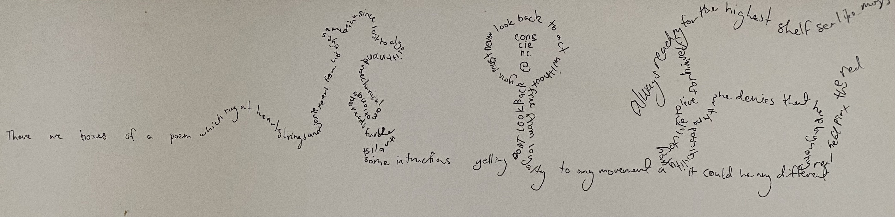

Concrete Cowgirl
Slipping across sand hills, on foot, red-backs depressing the ground as you step right foot then left. Each step kicks up a little dust, dust which clings to your pant leg and the toe of your shoe. The dust is a deep ochre colour probably cast from the light of the sun as it sets over the distant and colourless mountains. I feel the small rocks and larger grit held between my shoe and the earth’s solid stamp. Every now and then a piece becomes stuck and, as the princess with the pea, I must stop and retrieve it before I am able to continue. I flick it out with my index finger and watch as it careens away, losing sight of it among the million other rocks in sight.

The Cowgirl Manifesto is a poem I wrote as a response to our increasingly technological existence - at a time I was beginning to learn about feminist technologies and big data. It is a poem which has morphed into a vehicle to critique reigning technological infrastructures, and a lens to view the ecological, and social impacts of being online, and to question the promises of the anthropocene. It began as a writing exploration of concepts surrounding cyberfeminism, xenofeminism (Laboria Cuboniks) and Glitch Feminism (Legacy Russell) - but has morphed into ideation via action, performance and its materiality.
In the Cowgirl universe, Jillaroos are insurgents to Big Daddy data wranglers. Through dank metaphor the Cowgirl Manifesto explores the dark realms of the internet, bringing to light the pitfalls of digital infrastructure, herding code into digital menageries constructed out of virtual debris.
The Cowgirl Manifesto live coding performance via Hybrid live Coding Interfaces (Montreal) , November 23, 2021.
Skip to 1:57 for performance
https://www.youtube.com/watch?v=LDQ1PMqZowQ&ab_channel=InternationalConference onLiveCoding
For this assignment I’d like to create a concrete poem of sorts, something the user will scroll thru and happen upon objects fo the cowgirl universe. You’ll see the mockup contains relatively expected symbols - the horse, dry grass, rocks and a stream - though I wonder if it would be worth exploring something with urban themes too? A horse running past a city skyline? Maybe for the purpose of this assignment I’ll keep it simple and 2-dimensional, but in the future it could be interesting to play with layers of poems creating depth or the experience of moving into the cowgirl universe, rather than just across it?
Concrete Cowboy film - a 2020 western film by Ricky Staub, set in the middle of Philadelphia, featuring an all black cast. Based on the real life stables located downtown. It catches the audience off-guard with one particular scene where the horse gets in a house. Similar to Concrete Cowboy, Concrete Cowgirl is an attempt to mesh urban and outback in a digital dystopio. The concrete walls against the tumbleweed, evoking an enmeshing of old and new.
These are two examples of Concrete poetry to inspire Concrete Cowgirl. First is Mallarme’s “A throw of the dice will never abolish chance”, the layout reminiscent of the thrown dice bounce and twirling before it lands. The words placed seemingly by chance. Espantapájaros (translates to Scarecrow), by Oliverio Girondo is laid out in a more symbollic manner. The words fill the outline of the scare crow, as it reads: “I know nothing, you know nothing” - words regarding the intellect perhaps strategically placed in the Scarecrow’s empty skull.
Stéphane Mallarmé Un coup de dés jamais n’abolira le hasard https://www.poetryintranslation.com/PITBR/French/MallarmeUnCoupdeDes.php Old version with original layout: https://www.pinterest.com.au/pin/ebooks-are-still-waiting-for-their-avantgarde--75013150026709433/
Oliverio Girondo: Espantapájaros (Scarecrow) 1932 https://www.cervantesvirtual.com/portales/oliverio_girondo/imagenes_ilustraciones/imagen/imagenes_ilustraciones_13_oliverio_girondo_ilustracion_poesia_argentina_vanguardia_caligrama_espantapajaros/
Tech requirements:
Hardware - computer with enough processing power for VS Code and/or Illustrator
Software - VS Code, Adobe Illustrator, Internet connection
Conscious of the Digital footprint and permanence of the concrete, I intend to create a code poem using SVG paths, css styling and html which will take up minimal bandwidth. There would be potential to create an animated version which appeared as the user scrolls through. However, this might take away from the idea of simple as sacred, as well as increasing the bandwidth required to view the poem.
TIMELINE:
FINAL DUE JUNE 6, which is 8 weeks away
Initial mockup is complete, will be necessary to spend a week or so doing a final draft of the outline and placement of the words - maybe with a pencil drawing converted to digital svg to get some more detail / faster experimentation
Next is to figure out the best delivery. To have it animated or simply presented as an SVG image. I think there is time to work out how to use svg paths to place and animate text thru html/css. This experimentation I think will take 3 weeks or so
Finally will be fine tuning with text size and placement, bug testing. Perhaps any design changes based on class feedback - 3 weeks